Le misure di PA Digitale 2026: attuazione, risultati, sostenibilità e impatto
- PA digitale 2026
- PNRR
- Comuni
- cloud
- piattaforme nazionali
- censimento ICT
- open data
Le misure di PA Digitale 2026 hanno finanziato l'adozione di piattaforme digitali per Comuni, Scuole e altri enti: PDND, pagoPA, App IO, SPID e CIE, SEND, lo Stato Civile digitale.
La seguente lettura, emersa in seguito ad una riflessione condotta con l'occasione di una sessione formativa, è stata sviluppata analizzando i dati aperti ed i report pubblici disponibili attraverso quattro domande:
- Attuazione: le risorse sono state impegnate e gli interventi realizzati?
- Risultati: che cosa hanno prodotto?
- Sostenibilità: gli enti riusciranno a mantenerlo?
- Impatto: che cosa cambierà per territori e cittadini?
I dati sulle candidature sono aggiornati al 29 ottobre 2026.
1. Premessa: misure, piattaforme, stati
Le misure
PA Digitale 2026 raccoglie gli avvisi del Dipartimento per la trasformazione digitale sull'investimento PNRR M1C1 1.1–1.7. Per gli enti locali contano soprattutto nove sotto-misure:
| Misura | Cosa finanzia |
|---|---|
| 1.2 Cloud | Abilitazione e migrazione al cloud dei servizi degli enti |
| 1.3.1 PDND | Pubblicazione di API sulla Piattaforma Digitale Nazionale Dati |
| 1.3.1 ANNCSU | Georeferenziazione dei numeri civici nell'archivio nazionale |
| 1.4.1 Esperienza del cittadino | Siti e servizi al cittadino (informato e attivo) di Comuni e Scuole |
| 1.4.3 App IO | Servizi degli enti sull'App IO |
| 1.4.3 pagoPA | Servizi di incasso (pagamenti e dovuti) sulla piattaforma pagoPA |
| 1.4.4 SPID/CIE | Accesso ai servizi online con identità digitale |
| 1.4.4 ANSC/ANPR | Adesione all'Archivio Nazionale dello Stato Civile |
| 1.4.5 SEND | Notifiche digitali degli atti con valore legale |
Due considerazioni
- Visione statica: le misure finanziano l'abilitazione digitale degli enti verso cittadini e utenti, che possono ora fruire di servizi digitali. Grazie alle misure sono stati standardizzati diversi tipi di servizio (gestionali, online, pagamento, messaggi, notifiche) per molte PA, in particolare Comuni e Scuole.
- Visione dinamica: diventa ora possibile misurare la fruizione dei servizi digitali da parte di cittadini e utenti. È il passo successivo.
Un esempio: il servizio di refezione scolastica
Un solo servizio comunale può usare quasi tutte le misure. L'iscrizione alla mensa, il pagamento e l'eventuale recupero del credito passano per sette piattaforme diverse:
| Passo | Cosa succede | Misura |
|---|---|---|
| T1 · Iscrizione | ||
| 1–3 | Il genitore accede al servizio sul sito del Comune e si autentica | 1.4.1, 1.4.4 SPID/CIE |
| 4–5 | Compila il modulo, che viene registrato nel sistema informativo locale | 1.4.1, 1.2 Cloud |
| 6–7 | Il sistema chiede e riceve l'ISEE da un'altra amministrazione | 1.3.1 PDND |
| 8–9 | Viene creata la posizione debitoria dell'anno | 1.4.3 pagoPA |
| 10–12 | Il Comune conferma l'iscrizione, anche con un messaggio sull'App IO | 1.4.1, 1.4.3 App IO |
| T2 · Pagamento | ||
| 1–3 | Il genitore autenticato verifica quanto deve pagare | 1.4.1, 1.2 Cloud |
| 4–7 | Avvia il pagamento; esito, riconciliazione e conferma | 1.4.3 pagoPA |
| T3 · Recupero del credito | ||
| 1–2 | Il Comune avvia il recupero e invia una notifica digitale | 1.4.5 SEND |
| 3–4 | Il cittadino riceve anche una notifica di cortesia sull'App IO | 1.4.5 SEND, 1.4.3 App IO |
| 5 | Se la notifica digitale non va a buon fine, parte l'avviso postale | 1.4.5 SEND |
Gli stati di candidature e progetti
Sulla piattaforma PA digitale 2026 ogni domanda attraversa una sequenza di stati: prima come candidatura, poi, se finanziata, come progetto. Il contributo arriva solo alla fine, a progetto verificato.
| Stato | Cosa significa | Tempi indicativi |
|---|---|---|
| Candidatura | ||
| Prebozza, bozza, conclusa | L'ente compila la candidatura e genera l'Allegato 3 da firmare | |
| In verifica | Allegato 3 firmato e inviato al Dipartimento | Entro la scadenza dell'avviso |
| Ammessa | Ammissibile secondo fondi disponibili e ordine di arrivo; l'ente può inserire il CUP | Entro 5 giorni |
| Accettata | L'ente ha inserito il CUP entro il termine | |
| Finanziata | Inserita nel decreto di finanziamento | Circa due mesi dall'accettazione |
| Progetto | ||
| Da avviare, avviato | L'ente contrattualizza i fornitori | Entro i tempi dell'avviso |
| In verifica tecnica | Attività completate, in attesa dell'asseverazione tecnica | Dipende dalla misura (1.2 e 1.4.1 più lunghe) |
| Completato | L'asseverazione tecnica ha dato esito positivo | |
| In verifica formale | L'ente carica il certificato di regolare esecuzione e la richiesta di erogazione | Un paio di mesi per la coda dell'Unità di Missione |
| In liquidazione | Asseverazione formale completata | Circa una settimana |
| Liquidato | Fondi trasferiti nella tesoreria dell'ente | |
| Esiti negativi | ||
| Non ammessa, non accettata, non finanziata, annullata, scaduta | La candidatura si ferma prima del finanziamento | |
| Rinunciata, revocata | L'ente rinuncia al progetto, oppure il progetto è revocato (scadenze non rispettate, requisiti PNRR non soddisfatti) | |
Le piattaforme e il Team Territoriale
Chi segue i progetti lavora ogni giorno con alcune piattaforme: Indice PA per i riferimenti degli enti, PA digitale 2026 per gestire le misure, il sistema CUP per il codice unico di progetto (guide su OpenCUP), ANAC per il CIG e le piattaforme di AgID.
Il Team Territoriale, che afferisce al Dipartimento per la Trasformazione Digitale (DTD) della Presidenza del Consiglio dei Ministri (e di cui ho avuto l'onore di far parte) in questi quattro anni ha accompagnato gli enti in tutte le fasi (candidatura, contrattualizzazione, completamento, controlli formali) e, per i Comuni, ha gestito gli assessment spesso servizio per servizio. NB: la gestione ha seguito una logica di «portafoglio» dove conta il numero di enti, non quello di cittadini o utenti. Il Team Territoriale ha anche eseguito le asseverazioni (collaudi tecnici) su enti non direttamente seguiti (per una maggiore terzietà e indipendenza).
Torna su2. Attuazione
Le risorse sono state impegnate e gli interventi realizzati?
Il quadro d'insieme
Risorse assegnate e in gran parte già erogate: il 90% dell'importo. Il contributo è forfettario e arriva dopo la verifica del risultato, quindi l'erogato misura gli interventi conclusi, non solo la spesa.
- 74.639progetti finanziati, al netto di 18.855 rinunce
- 2,59 mld €finanziati agli enti, di cui 2,32 mld € erogati
- 16.847enti beneficiari, di cui 7.891 Comuni
- 99,9%dei Comuni italiani ha almeno un progetto attivo
Gli avvisi dal 2022 al 2025
50 avvisi per le nove sotto-misure, concentrati nel 2022 e riaperti fino all'ultimo anno utile.
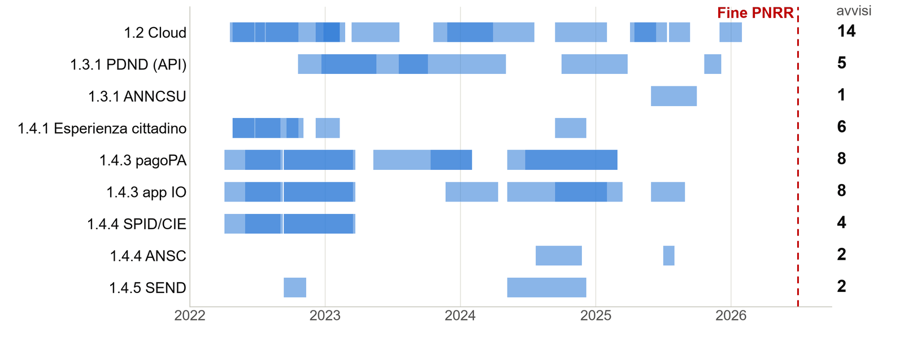
Contando anche la misura 1.1 (PA centrali e ASL/AO), gli avvisi del Dipartimento sono 57:
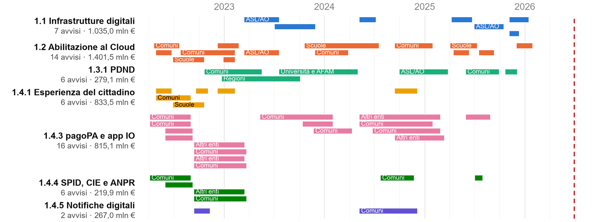
Dotazione, avvisi ed erogato
Gli avvisi coprono il 97–98% della dotazione di Cloud ed Esperienza del cittadino, ma solo il 43% della 1.3.1. Questi dati non spiegano la differenza: la dotazione può comprendere altri interventi (per la 1.4.4 anche ANPR).
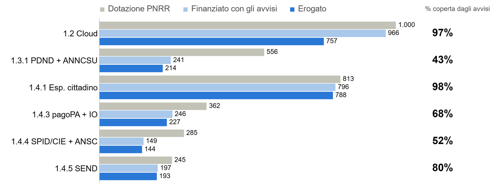
Stato dei progetti
Il 92% delle rinunce riguarda gli avvisi del 2022, e nel 79% dei casi l'ente ha un altro progetto attivo sulla stessa misura: spesso ha rinunciato per ricandidarsi.
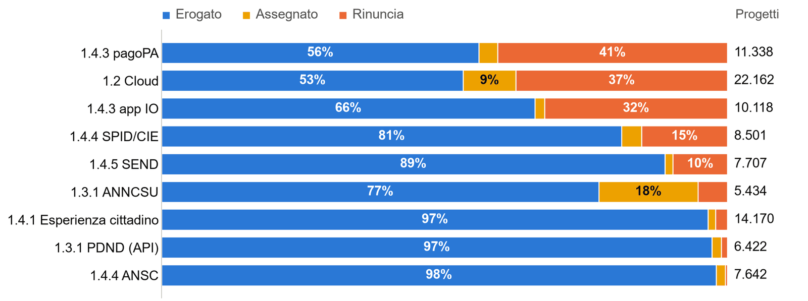
Il ritmo delle erogazioni
Le curve sono diverse: ANSC e ANNCSU partono solo tra fine 2025 e 2026, mentre il Cloud è al 78% dell'importo.
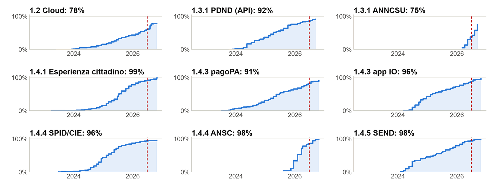
La copertura dei Comuni
Un Comune ha in mediana 8 misure su 9; solo 5 Comuni non hanno progetti.
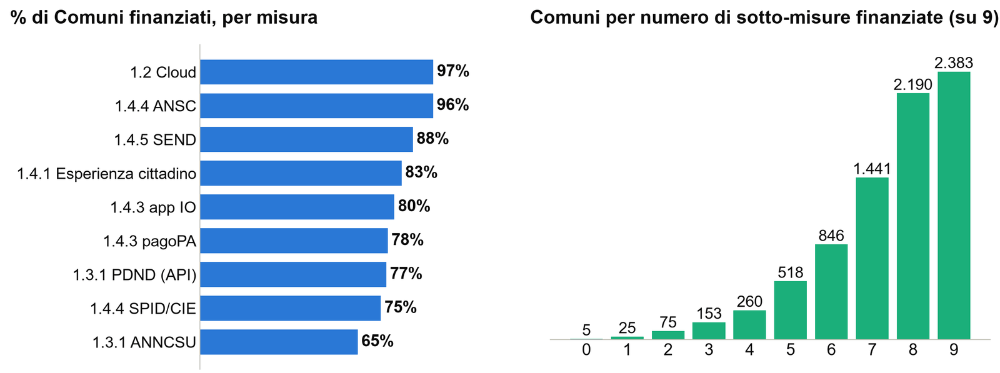
Comuni finanziati per regione
L'adesione è alta ovunque, con poche eccezioni da approfondire. In Friuli-Venezia Giulia i valori bassi su Cloud, pagoPA, App IO e SPID/CIE potrebbero dipendere da servizi forniti a livello regionale: è un'ipotesi non verificata.
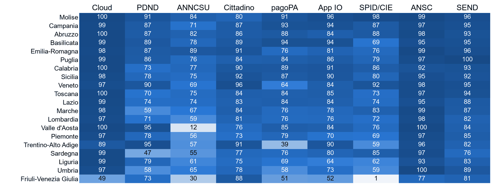
3. Risultati
Quali servizi, opportunità e benefici sono stati effettivamente prodotti?
Cosa è stato prodotto
Servizi digitali standardizzati in 70.230 progetti conclusi, cioè con il contributo erogato dopo la verifica del risultato.
| Misura | Risultato finanziato | Progetti conclusi | Erogato |
|---|---|---|---|
| 1.2 Cloud | Servizi migrati in cloud | 11.811 | 757,1 mln € |
| 1.3.1 PDND | API pubblicate sulla PDND | 6.246 | 183,7 mln € |
| 1.3.1 ANNCSU | Civici georeferenziati conferiti | 4.199 | 30,2 mln € |
| 1.4.1 Esperienza cittadino | Siti e servizi digitali di Comuni e Scuole | 13.687 | 787,8 mln € |
| 1.4.3 pagoPA | 157.590 servizi di incasso attivati | 6.356 | 161,4 mln € |
| 1.4.3 App IO | 172.785 servizi attivati su IO | 6.674 | 66,0 mln € |
| 1.4.4 SPID/CIE | Accesso con SPID e CIE ai servizi online | 6.911 | 96,8 mln € |
| 1.4.4 ANSC | Stato civile digitale nei Comuni | 7.491 | 46,9 mln € |
| 1.4.5 SEND | Notifiche digitali attivate | 6.855 | 193,5 mln € |
Dai finanziamenti all'uso
Dati nazionali sull'uso, che comprendono anche gli enti non finanziati; per la 1.2, la 1.4.1 e la 1.4.4 si contano invece gli enti con progetto concluso. Le fonti diverse dai dati aperti sono indicate nella nota.
- 1.2 Cloud11.700enti con servizi migrati in cloud: 6.862 Comuni (87%) e 4.662 Scuole (57%); oltre 105.000 servizi migrati
- 1.3.1 PDND15.270e-service pubblicati da 6.516 enti, 11.648 dai Comuni, su 9.723 aderenti; 52.565 connessioni attive e 813 mln di richieste nel 2026
- 1.3.1 ANNCSU76%numeri civici con coordinate (dato al 15/09/2026); 5.061 Comuni li aggiornano con le API dell'Archivio via PDND: oltre 23 mln di chiamate
- 1.4.1 Esperienza cittadino13.333siti con modello Designers Italia: 6.536 Comuni (83%) e 6.797 Scuole (82%); 25.515 servizi digitali dei Comuni
- 1.4.3 pagoPA448,7 mlntransazioni nel 2025
- 1.4.3 App IO98%Comuni presenti su IO, con 244.074 servizi; 396 mln di messaggi inviati nel 2025 (tutti gli enti)
- 1.4.4 SPID/CIE6.907enti con SPID e CIE integrati: 5.722 Comuni (72%) e 1.185 altri enti; 1,22 miliardi di accessi con SPID nel 2025
- 1.4.4 ANSC98,3%Comuni con Stato Civile digitale; oltre 700.000 atti digitali formati (aprile 2026)
- 1.4.5 SEND19,5 mlnnotifiche nel 2025, 7.140 enti mittenti
Per la 1.2, la 1.4.1 e la 1.4.4 il dato non misura l'uso: conta gli enti con il progetto concluso, cioè verificato al momento dell'asseverazione. Per la 1.4.1 il sito è stato verificato sui criteri del modello Designers Italia; i servizi digitali (pacchetto «cittadino attivo») sono ricavati dagli importi erogati con il listino degli Allegati 2: 6.303 Comuni ne hanno attivato almeno uno, la gran parte quattro. Per la 1.2 i servizi migrati sono stimati allo stesso modo: 32.985 per le Scuole e 72.236 per 6.669 Comuni; per gli altri 194 Comuni (avvisi 2024–2025) e per ASL e altri enti l'importo non consente la stima. Per ANNCSU le chiamate sono i token PDND emessi per gli e-service «Aggiornamento coordinate» e «Aggiornamento accessi» dell'Agenzia delle Entrate. Per IO i messaggi sono quelli di tutti gli enti, non solo dei Comuni. Per ANSC non ci sono dati aperti sugli atti: il dato è riportato da Agenda Digitale (9/4/2026). Per la PDND i dati (Numeri PDND, 30/10/2026) riguardano tutti gli aderenti: 6.516 enti erogano e-service, 8.545 ne fruiscono; le richieste di accesso sono i token emessi, da gennaio a ottobre 2026. Per la 1.4.4 l'avviso finanzia insieme SPID e CIE (14.000 € a Comune), quindi i progetti non distinguono le due credenziali; l'uso è misurabile solo per SPID, con gli accessi annui pubblicati da AgID (servizi pubblici e privati), mentre per la CIE non esiste un dato pubblico complessivo sugli accessi. Percentuali su 7.896 Comuni (ISTAT) e 8.171 istituti scolastici statali (Indice PA, ottobre 2026). L'ultimo dato ISTAT sull'uso del cloud nelle PA locali è il 54% del 2022.
Cloud: il punto di partenza
ISTAT 2022: 54% delle PA locali. Con il PNRR l'87% dei Comuni ha concluso la migrazione in cloud. L'ultimo dato ufficiale sull'uso resta quello ISTAT del 2022, prima dell'effetto dei progetti PNRR; il Censimento ICT 2026 darà il primo quadro dopo il PNRR.
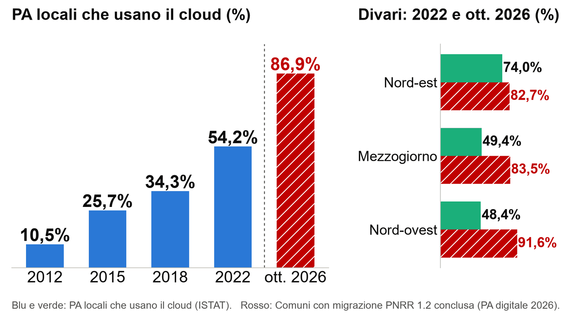
- Politecnico di Milano, AssoSoftware, 202368%enti comunali con tutti i gestionali in cloud (misura diversa da ISTAT)
- PA digitale 2026, misura 1.2, ottobre 202687%dei Comuni e 57% delle Scuole con migrazione in cloud conclusa
I tre dati misurano cose diverse e non sono confrontabili. ISTAT conta le PA locali che usano servizi cloud. Il Politecnico conta i Comuni con tutti i gestionali in cloud, ma il comunicato non precisa su quale base. Il dato PA digitale 2026 conta Comuni e Scuole con un progetto 1.2 concluso, cioè con almeno un servizio migrato e verificato all'asseverazione: misura l'adesione al PNRR, non l'uso.
PDND: adesioni e scambi
9.723 enti aderenti e circa 84 milioni di sessioni di scambio di dati al mese.
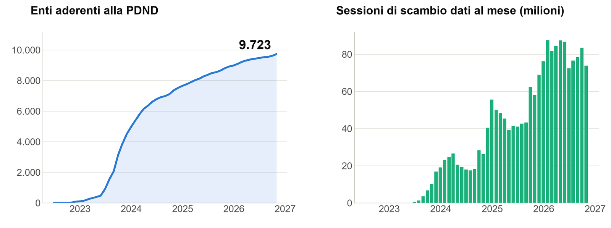
ANNCSU: civici georeferenziati
Il 76% dei numeri civici ha le coordinate: quasi tutti si trovano nei Comuni finanziati, e le coordinate derivano in gran parte da basi dati, non da rilievi sul campo.
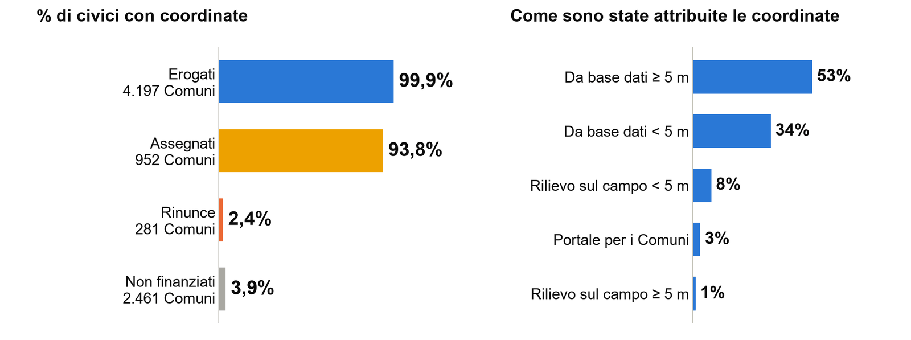
pagoPA: le transazioni
448,7 milioni di transazioni nel 2025; i Comuni sono la terza categoria di enti creditori.
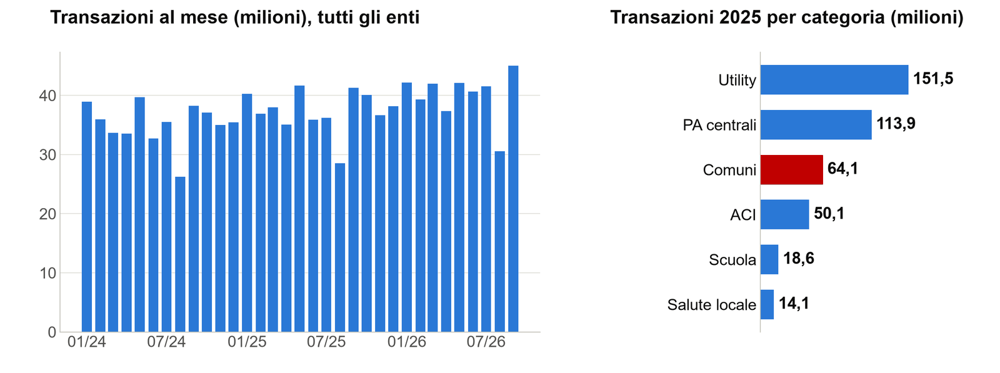
App IO: i messaggi
396,4 milioni di messaggi nel 2025, con il 98% dei Comuni presenti sull'app.
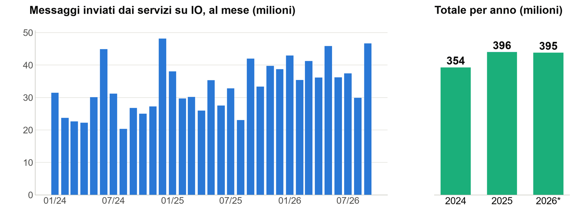
SEND: le notifiche
Le notifiche crescono, ma nel 2026 il 72% è ancora analogico.
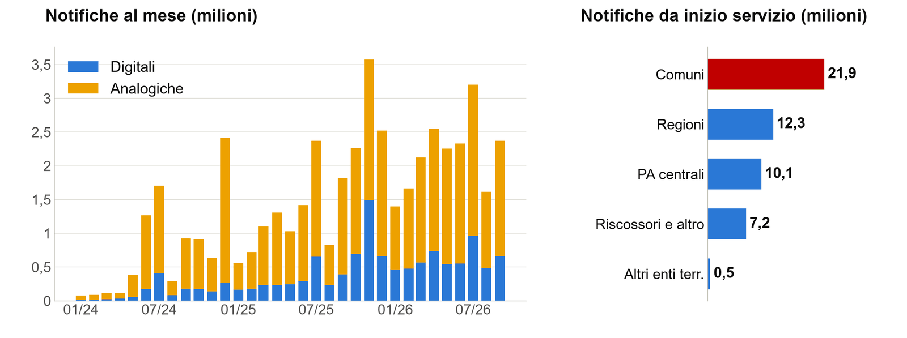
Identità digitale: SPID e CIE
Con SPID si accede ogni anno a tutti i servizi in rete, pubblici e privati, oltre un miliardo di volte: 1,22 miliardi nel 2025 (AgID). Per la CIE non esiste un dato pubblico complessivo: l'unico dato aperto riguarda gli accessi ai servizi ANPR, dove la CIE cresce molto ma SPID resta prevalente. Non esistono dati aperti per ente sugli accessi con SPID e CIE.
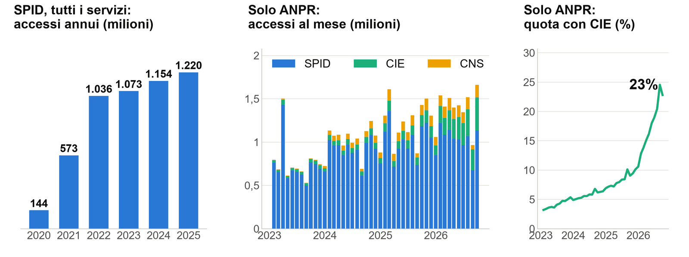
ANSC: lo Stato Civile digitale
Il 98,3% dei Comuni ha aderito, in gran parte tra il 2025 e l'inizio del 2026.
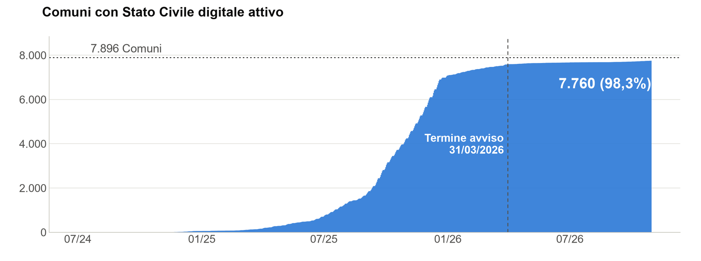
4. Sostenibilità
Gli enti locali saranno in grado di mantenere nel tempo i risultati raggiunti?
Il PNRR finanzia l'avvio, non la gestione
Il contributo è una tantum e a risultato. Chi sosterrà i costi ricorrenti dopo il PNRR?
| Cosa copre il contributo (dagli avvisi) | Cosa resta da coprire (ipotesi da verificare) |
|---|---|
| Un forfait a risultato, erogato una sola volta dopo la verifica. Finanzia migrazione, integrazione e attivazione. Per il cloud dei Comuni copre il canone solo per il primo anno. | Canoni cloud dal secondo anno, licenze e manutenzione dei gestionali, assistenza dei fornitori, competenze interne. Per ANSC, senza uso continuativo il contributo è revocato. |
La colonna di sinistra riporta quanto scritto negli Allegati 2 degli avvisi; la colonna di destra è un'ipotesi di lavoro, da validare con il Censimento ICT 2026.
Quanto pesa il PNRR nei piccoli Comuni
99 € per abitante sotto i 5.000 abitanti, 9 € nelle grandi città. Il dato non misura i bilanci: resta da verificare se questo si traduca in costi ricorrenti più difficili da sostenere.
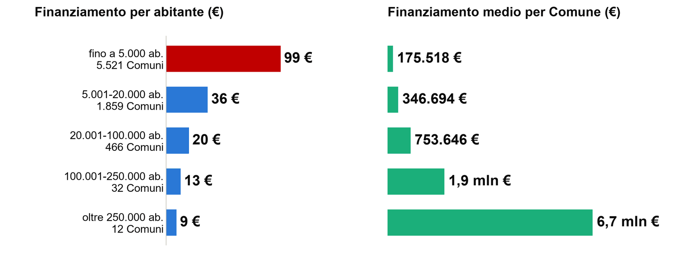
Il Censimento ICT 2026 lo misurerà
Il censimento del patrimonio ICT della PA, condotto da AgID con il Dipartimento per la trasformazione digitale, raccoglierà proprio i dati che servono. Scadenze indicate al 30/10/2026: 10 novembre 2026 per PA centrali e locali e ASL/AO, 1 dicembre 2026 per scuole, università, ricerca e AFAM. Non c'è ancora una data per i risultati.
| Domanda di sostenibilità | Dato atteso dal censimento |
|---|---|
| Ci sono le competenze? | Personale ICT previsto ed effettivo (FTE), presenza del Responsabile per la transizione al digitale, uso dell'IA |
| Ci sono le risorse? | Spesa ICT 2025 (CAPEX e OPEX) e previsioni 2026–2028 |
| Quanto pesano i costi ricorrenti? | Licenze software, acquisti cloud, accordi quadro |
| I servizi restano in cloud? | Stato della migrazione per servizio, modello, fornitori |
| Quante infrastrutture restano? | Data center di proprietà, dismissioni, consumi energetici |
Il Censimento ICT: dal 2017 a oggi
La prima edizione (2017–2019) riguardava solo i data center; la nuova, triennale, guarda a organizzazione, infrastrutture, servizi e spesa.
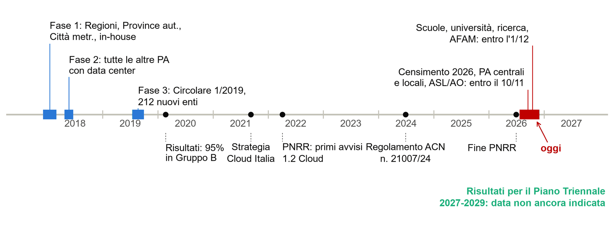
| Censimento 2017–2019 | Censimento 2026 | |
|---|---|---|
| Perimetro | Data center (CED) delle PA | Organizzazione, infrastrutture, servizi e spesa ICT |
| Enti | 990 enti partecipanti, 1.252 data center | Tutte le PA centrali e locali, sanità, scuole, università |
| Modalità | Tre fasi, circolari AgID, PEC al responsabile | Unica rilevazione su PA digitale 2026, in parte precompilata |
| Risultato | Classificazione: candidabili al Polo Strategico Nazionale, Gruppo A, Gruppo B (il 95%) | Mappa di servizi, migrazione al cloud, spesa e previsioni |
| Uso | Razionalizzazione dei data center e migrazione al cloud | Piano Triennale 2027–2029 e investimenti oltre il PNRR |
Il questionario 2026 ha tre sezioni: organizzazione (ufficio ICT, piano di trasformazione, RTD, uso dell'IA), infrastrutture e servizi (data center, digitalizzazione e migrazione al cloud di ogni servizio, fornitori) e spesa ICT (costi operativi e di investimento, licenze, acquisti cloud). Si compila nell'area riservata di PA digitale 2026 e va confermato con un attestato firmato dal legale rappresentante o dall'RTD.
Torna su5. Impatto
Quali cambiamenti duraturi si saranno prodotti nei territori e nella vita dei cittadini?
L'uso delle piattaforme cresce
Un segnale positivo, ma non attribuibile ai soli progetti finanziati: i dati sono nazionali. SPID resta oltre il miliardo di accessi l'anno, ma nei primi nove mesi del 2026 cala del 10% sullo stesso periodo del 2025, mentre crescono gli accessi con CIE: 265,8 milioni di accessi «Entra con CIE» a fine settembre 2026.
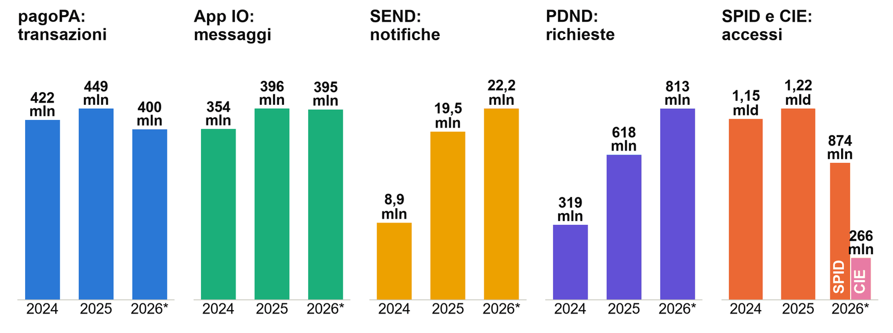
I territori: adesione diffusa
Il Sud aderisce spesso più del Nord: è un buon segnale, ma adesione non significa uso. Nel 2022 ISTAT indicava il cloud nel 49,4% delle PA locali del Mezzogiorno e nel 74,0% del Nord-est.
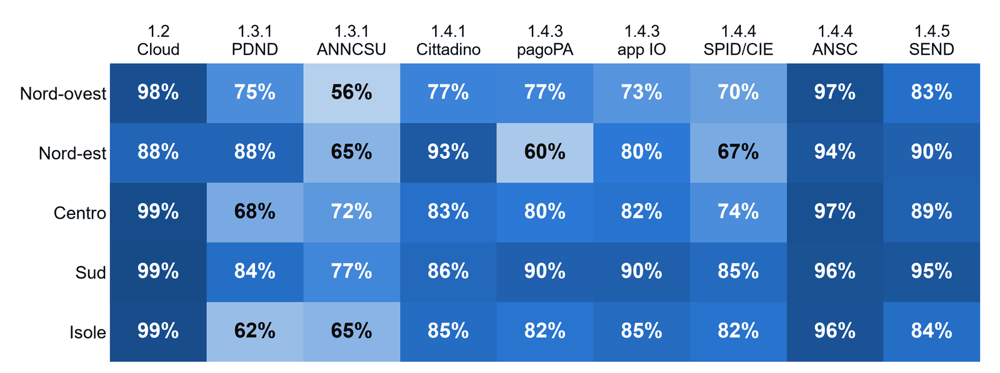
Dall'adozione all'impatto
Il prossimo passo è misurare la fruizione, oggi disponibile solo in forma aggregata. Gli indicatori qui sotto sono una proposta di lavoro.
| Livello | Indicatori proposti | Disponibilità oggi |
|---|---|---|
| Uso | Transazioni, messaggi e notifiche per ente e per abitante | Solo aggregata, non per ente |
| Esperienza | Pratiche completate online, tempi, soddisfazione | Nessun dato aperto |
| Efficienza dell'ente | Notifiche postali evitate, costi di incasso, tempi | Solo notifiche, in forma aggregata |
| Inclusione | Uso per età, territorio e dimensione del Comune | Nessun dato aperto |
| Tenuta nel tempo | Servizi ancora attivi e usati dopo la fine del PNRR | Da costruire |
6. Riferimenti e precisazioni
Tutti i dati provengono da fonti aperte e disponibili. Le attività di estrazione, rielaborazione e presentazione dei dati sono state supportate da strumenti di intelligenza artificiale. Gli indicatori di fruizione sono nazionali o aggregati e comprendono anche gli enti non finanziati.
Dati aperti (scaricati il 30–31 ottobre 2026)
- PA digitale 2026, avvisi e candidature finanziate (al 29/10/2026): attuazione, risultati, piccoli Comuni, territori.
- Numeri PDND (PagoPA S.p.A.): adesioni e sessioni di scambio.
- Open data PagoPA S.p.A.: pagoPA, App IO, SEND.
- Open data ANPR (Ministero dell'Interno): adesioni ad ANSC, accessi per credenziale.
- AgID, SPID e open data SPID: accessi annui con SPID ai servizi in rete.
- Osservatorio Digital Identity & Wallet, Politecnico di Milano (comunicato del 5/11/2026): identità e accessi SPID e CIE a settembre 2026.
- Agenda Digitale, 9/4/2026: Comuni aderenti ad ANSC e atti digitali formati.
- ItaliaOggi, 6/11/2026, dati dell'Osservatorio Digital Identity & Wallet del Politecnico di Milano: accessi SPID e CIE nei primi nove mesi del 2026.
- ANNCSU, Indirizzario nazionale (15/09/2026): civici georeferenziati.
- ISTAT, Elenco dei Comuni italiani e popolazione residente al 1/1/2022.
Documenti e rapporti (consultati fino al 2 novembre 2026)
- Allegati 2 degli avvisi PA digitale 2026: servizi, importi, regole, costi coperti.
- Piano finanziario PNRR, dati ReGiS al 26/02/2026, elaborazione CGIL: dotazioni per investimento.
- ISTAT, Pubblica amministrazione locale e ICT – Anno 2022 (23/02/2024).
- Osservatori del Politecnico di Milano e AssoSoftware, comunicato di febbraio 2024.
- PA digitale 2026, Censimento del patrimonio ICT (pagina aggiornata al 30/10/2026); ReTeDigitale (23/07/2026); Agenda Digitale (2026).
- Docs Italia, Censimento ICT (criteri della terza fase e Circolare AgID 1/2019) e Sinet (21/02/2020): risultati del censimento 2017–2019, ripresi da fonti secondarie perché al 2 novembre 2026 il sito di AgID era in manutenzione.